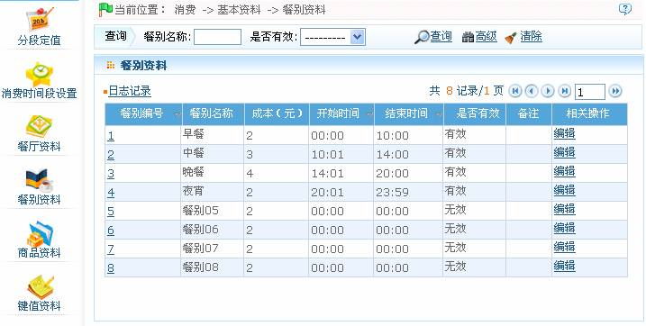
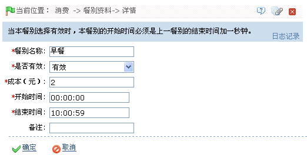

ID--8.2.4 餐别资料
点击【消费】 【基本资料】
【基本资料】 【餐别资料】图标，进入如下图所示餐别资料设置页面：
【餐别资料】图标，进入如下图所示餐别资料设置页面：

系统默认具有8个餐别资料，用户可以通过【编辑】按钮对其进行编辑，但不可删除。
餐别资料编辑的具体步骤如下（开始/结束时间的选择请参见附录1 常用操作中的3选择时间）：
1、单击餐别资料所在行的“相关操作”下对应的【编辑】按钮，进入餐别资料编辑页面。

根据需要修改该餐别资料的各项参数。时间的设置，请参见附录1 常用操作中的3. 选择时间）
 注意：当餐别选择为“有效”时才有效，且该餐别的开始时间必须是上一餐别的结束时间加一分钟。
注意：当餐别选择为“有效”时才有效，且该餐别的开始时间必须是上一餐别的结束时间加一分钟。
2、设置完成后，单击【确定】按钮保存，并返回餐别资料页面；此时餐别资料列表中将显示修改后的餐别资料。